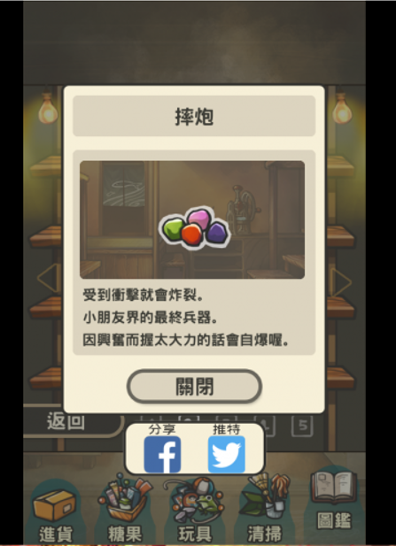
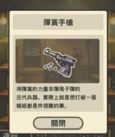

童玩
- 翁子標
- 摔炮 
- 陀螺
- 彈簧手槍 
- 彈珠/彈力球

一種紙牌遊戲，需要一些小技巧才能以一張紙牌，拍飛他人紙牌~
出自昭和雜貨店物語
雖然很好玩，但要非常小心，以免傷害到其他人
出自昭和雜貨店物語

可說是相當經典的童玩，看著陀輪逐漸停止旋轉的身影，總是期待著他能轉得更久一些~
出自昭和雜貨店物語
不管是用BB彈作為子彈，或是用竹籤做成的手槍配上橡皮筋，都會讓人不驚幻想自己是位神槍手
出自昭和雜貨店物語

一顆顆的彈珠/彈力球衝撞出無數的火花，把它放在陽光下看，會有意外的美景
出自昭和雜貨店物語